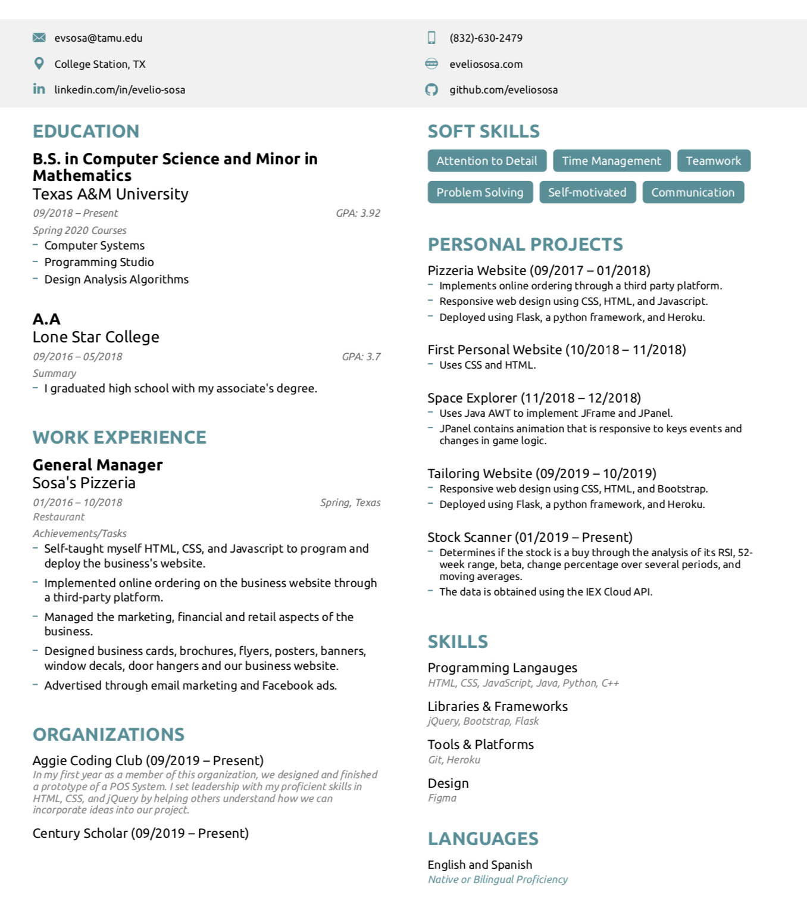

My first experience with programming was coding a web application for my parent's business back when I was in high school. At that moment, I realized that I was deeply fascinated by the fact that one could make an idea a reality with just a laptop and code. I am always excited to learn and implement new features in my projects. In the past few years that I have been programming, I have learned HTML, CSS, JavaScript, Java, C++, and Python. In addition to those languages, I have become familiar with frameworks such as Flask, Bootstrap, and jQuery. I have also been a part of the Aggie Coding Club from the first semester of college. Every semester we form teams and work together to design, code and deploy our applications.
For the following years at Texas A&M, I plan to further expand my knowledge into different areas of computer science, such as cloud computing and machine learning. I see computer science as a pathway to achieving a better version of the world. I believe that with my strong work ethic and passion I will accomplish many things in my career as a software developer. I am passionate about full-stack development and creating software that solves real-world issues.
